Your Local Collection, Fully Personalized
Experience your music in a modern, beautiful interface with Nordplayer. Designed for those who value aesthetics and total control over their local library.
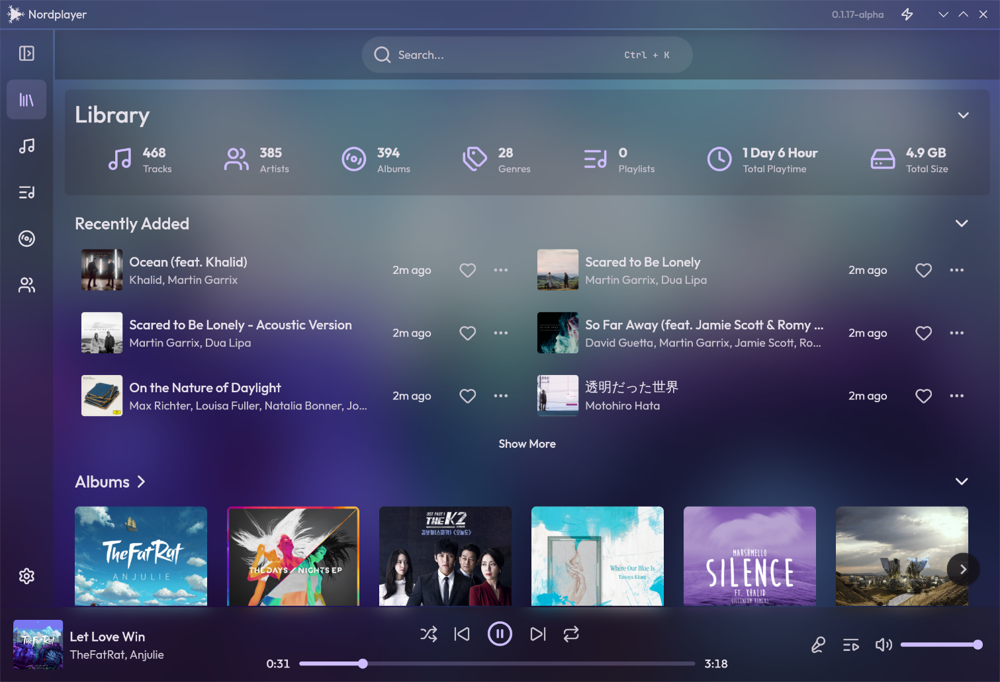
Choose Your Interface
Static Presets
Choose from curated color schemes like Nord, Nord Light, or Graphite. Perfect for those who want a consistent and focused look.
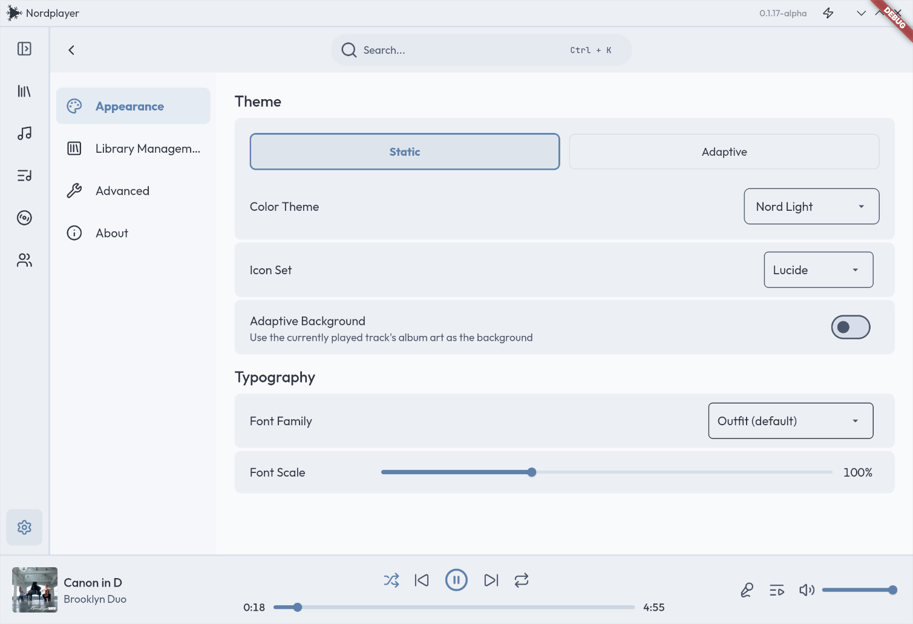
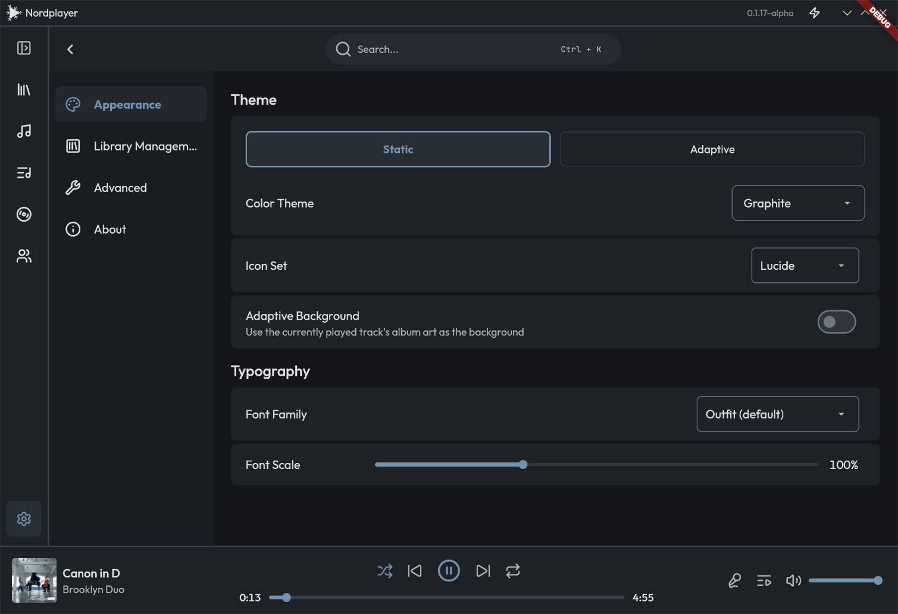
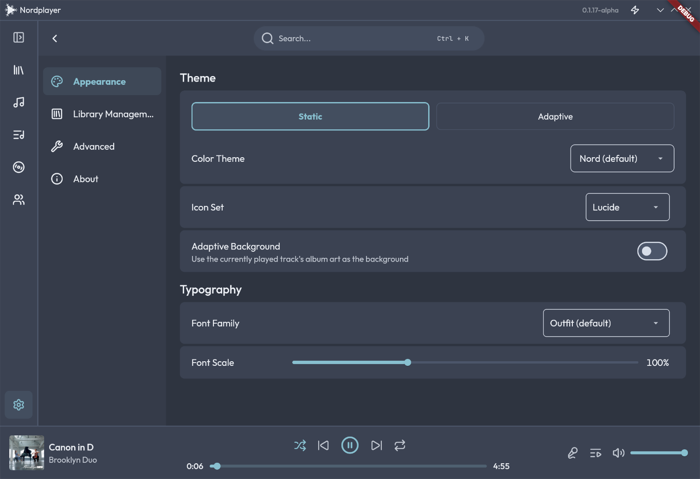
Adaptive Colors
Let the player breathe with your music. Colors are extracted from album art to create a unique atmosphere for every track.
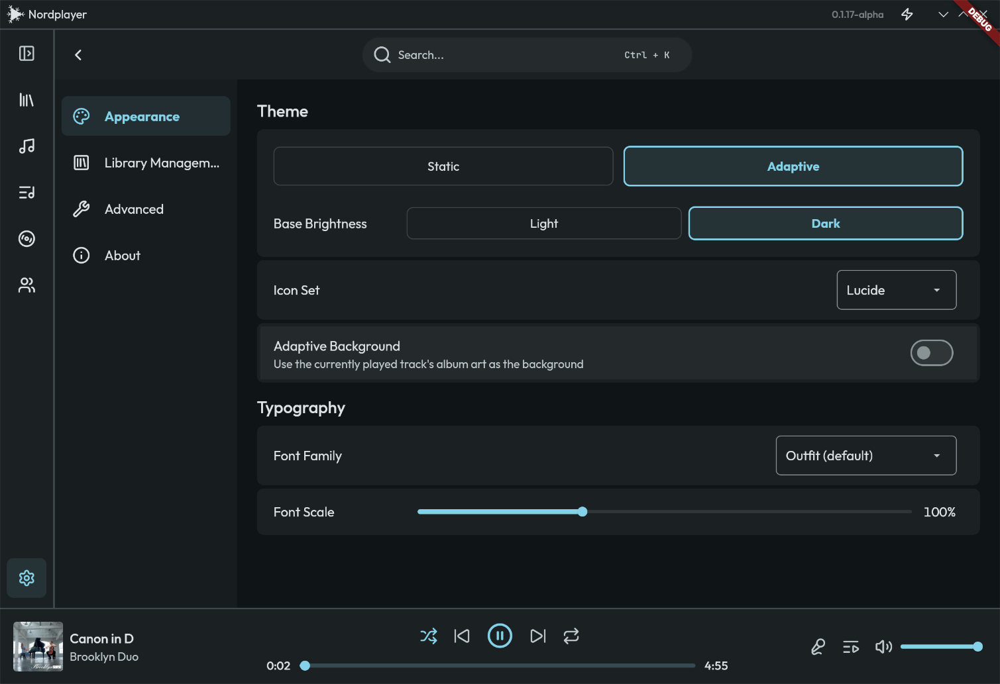
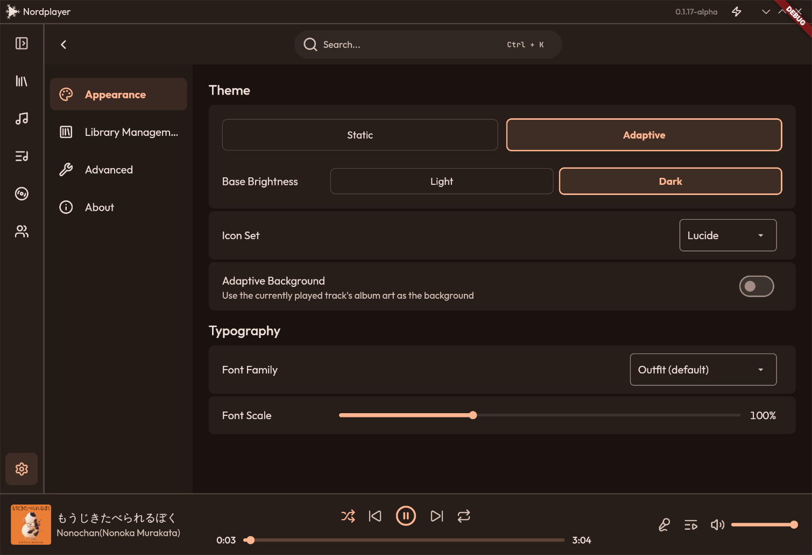
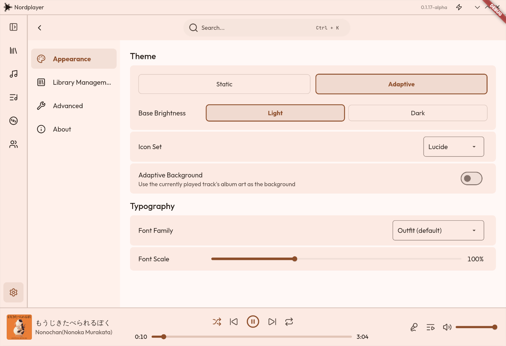
Adaptive Background
The interface dynamically adapts to the color of your album art, creating a fully immersive and unified listening experience. Every album feels like its own world.
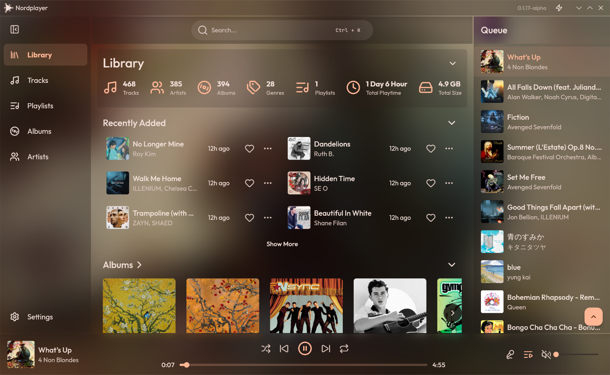
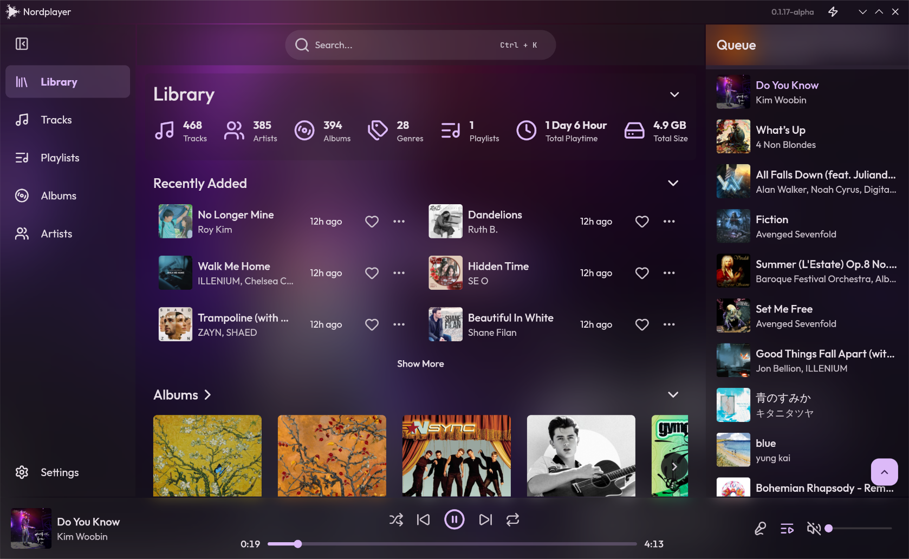
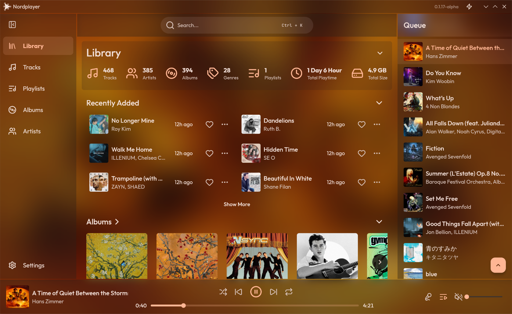
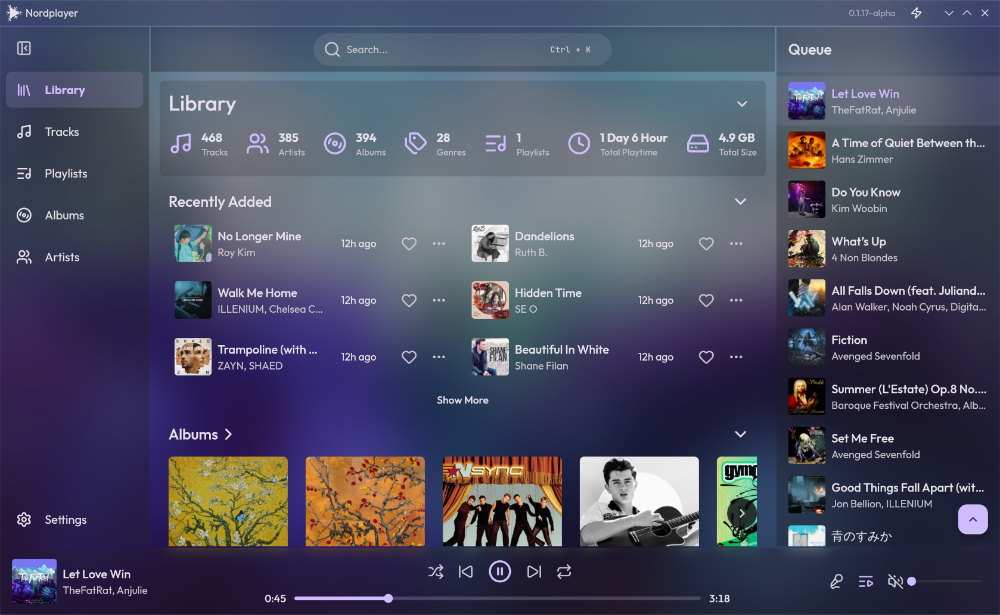
Studio Quality Playback
Lossless Masters
Native support for FLAC and ALAC up to 24-bit/192kHz. Experience your music exactly as it was recorded.
The mpv Core
Powered by libmpv. If it's an audio file, Nordplayer can play it. No codecs to install, no setup required.
Local & Offline
No accounts, no cloud sync, no tracking. A completely offline music player designed strictly for your local library, keeping your listening private.
Ready to play?
Arch-based distribution
Run the following command in your terminal:
yay
-S nordplayer-bin
Frequently Asked Questions
Yes, Nordplayer is completely free and it's open-source. You can check out the source code on GitHub.
Nordplayer is currently in active development. A lot of the planned feature stil hasn't been implemented yet. But for basic music playing usage, you can use it already.